Overview
Give a high-level overview of what you implemented in this homework. Think about what you've built as a whole. Share your thoughts on what interesting things you've learned from completing the homework.
Section I: Rasterization
Part 1: Rasterizing Single-Color Triangles
- I first found the rectangular bounding box of the triangle by calculating the min and the max of the x and y coordinates of the three vertices. Then, I iterated through each of these pixel locations and found their centers. I defined a function that took in the sample point along with two vertices of the triangle and found the dot product between the norm of the two vertices and the vector from the first vertex to the sample point. I repeated this with all three pairs of the triangle vertices. These dot products will determine which side the sample point lies on and it will be inside the triangle if all three dot products have the same sign or are all zero. If this sample point is inside of the triangle, I filled the pixel with the function argument color.
-
My algorithm is no worse than one that checks every pixel in the bounding box of the triangle because it is
linear with respect to the number of pixels in this box as I used two nested for loops to iterate through the
minof x to themaxof x and theminof y to themaxof y coordinates. Thus, my algorithm took into account every pixel in the bounding box of the triangle. - Here, I chose to center it around the long magenta shape because it has a little bit of jaggies.
|
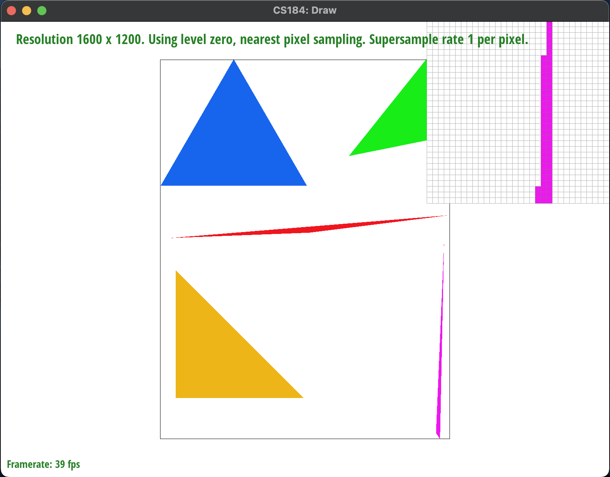
|
-
Extra Credit: I had implemented a few different optimization methods. The first method was to
reduce repetitive
calculations by storing the six perpendicular vectors of the triangle as well as the base
xandycoordinates with step size outside of theforloop. I wanted to move calculations that I was doing over and over that did not depend on the innerforloops outside of them. The second method was to use#pragma omp parallel forto parallelize the outerforloops. The third method was to combine the last two methods above. I used the C++clock()library to time the execution of each method by placing it before and after thesvg.draw()inDrawRend::redraw()and subtracting the two recorded times.Image Method 1: No Optimization Method 2: Reduce Repetitive Calculations Only Method 3: Pragma Parallelization Only Method 4: Methods 2 & 3 Combined Basic Test 3 32.172 ms 26.906 ms 31.964 ms 27.112 ms Basic Test 7 64.232 ms 43.85 ms 63.857 ms 43.61 ms Basic Test 8 15.193 ms 14.438 ms 14.468 ms 14.178 ms
Part 2: Antialiasing Triangles
-
I implemented supersampling by dividing each pixel into
sample_ratenumber of subpixels. From there, I resized thesample_bufferto besample_ratetimes larger than before so that I could store each of the individual subpixels for each original pixel in the image and created a helper function to figure out the index that each subpixel was supposed to be in thesample_buffer. I then iterated through each of the subpixels, found the center of each subpixel, and used the same algorithm as in part 1 to determine if the subpixel was inside of the triangle. If it was, I filled the subpixel with the color of the triangle. Inresolve_to_framebuffer, I averaged the colors of the subpixels to get the color of the original pixel. Supersampling is very useful because it helps to improve the quality of the images by sampling at a higher resolution and then downsampling to the original resolution. This will reduce aliasing and smooth out any jaggies. A few modifications that I made to the original rasterizer pipeline was to change thesample_buffersize and to calculate the new subpixels where each width and height became a multiple ofsqrt(sample_rate)away from the original pixel. I aslo had to change theresolve_to_framebufferto average the colors of the subpixels. These modifications helped antialias my triangle because it helped smooth out the jaggies due to the blurring and connected subpixels together that would have been otherwise disconnected. -
Here, I have decided to zoom into the thin red part of the triangle to show the effects that supersampling has
on antialiasing our image. As I increase the
sample_rate, there seems to be less gaps between the different regions. The reason why there are missing gaps at lowersample_rates is because the triangle is so thin that only parts of the pixel lies within the triangle and because it is an "all-or-nothing" policy each pixel has its own color and there is no blending between them. As thesample_rateincreases, I am able to sample at a higher frequency and on smaller subpixels and because they are so small and close together they lie within the triangle and are able to blend together to create a smoother image. This in turn allows the original pixel to have a more faded color based on the saturation and thus is able to reduce some of the jaggies and smooth out the fragmentations.
|
|
|
|
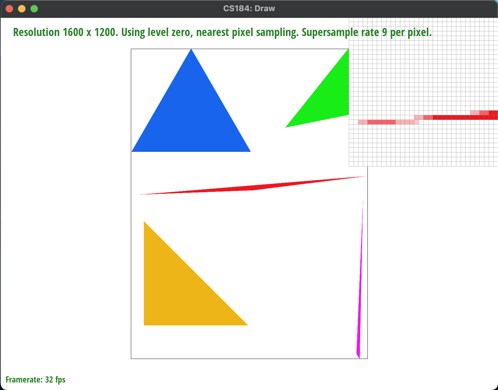
|
|
Part 3: Transforms
- Here, I have transformed our cubeman robot into a basketball player, fully equipped with a basketball and the necessary gear to become the next great Michael Jordan. He is shown dribbling the basketball and calling a play for his teammates.
|
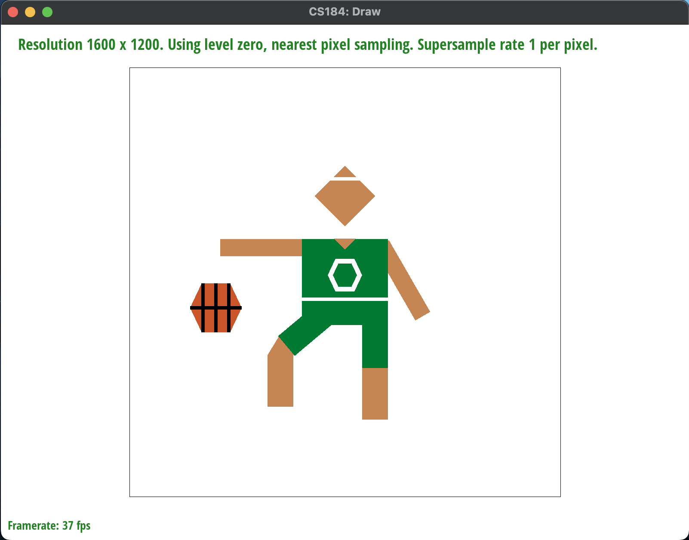
|
Section II: Sampling
Part 4: Barycentric Coordinates
-
Barycentric coordinates essentially is a way to represent points within a geometric figure. In other words,
they tell us how much each vertex of the three
vertices
contributes to a
sample
point inside of the triangle, where these weights indicate how important each vertex is in determining the
location of the sample point. Any point inside of the triangle can be represented as a linear combination of the
three vertices, where the weights must sum to one. This constraint will ensure that the sample point will lie
within the triangle since each weight is essentially the proportion of the area of the triangle that the
corresponding vertex contributes to the overall area. Another way to think about this is that we are
distributing the area of the triangle to the three vertices based on the sample point's location. The closer the
sample point is to a vertex, the larger the weight of that vertex will be. The further the sample point is from
a vertex, the smaller the weight of that vertex will be. To illustrate how barycentric coordinates work, I
created an
svgfile with a triangle and each of the vertices is a different color: red, green or blue.
|
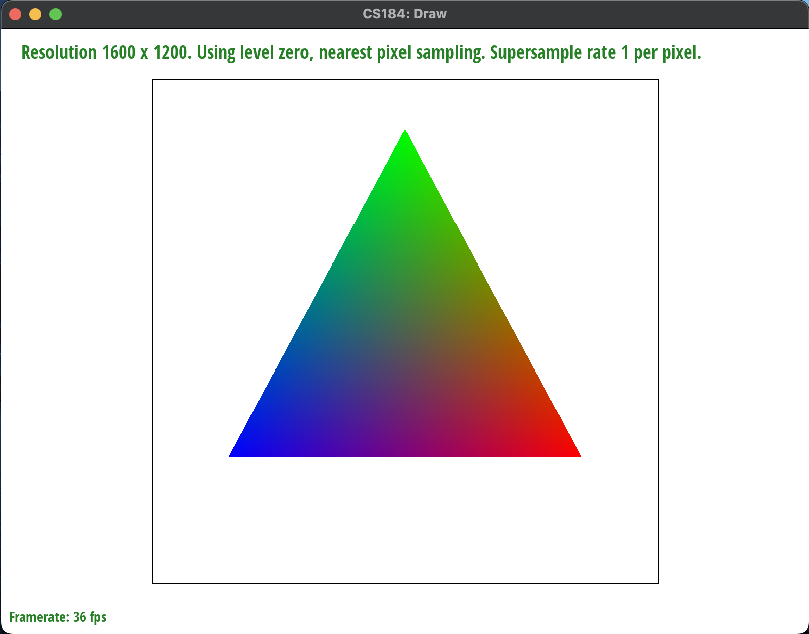
|
-
Here is
svg/basic/test7.svgwith default viewing parameters and sample rate 1.
|
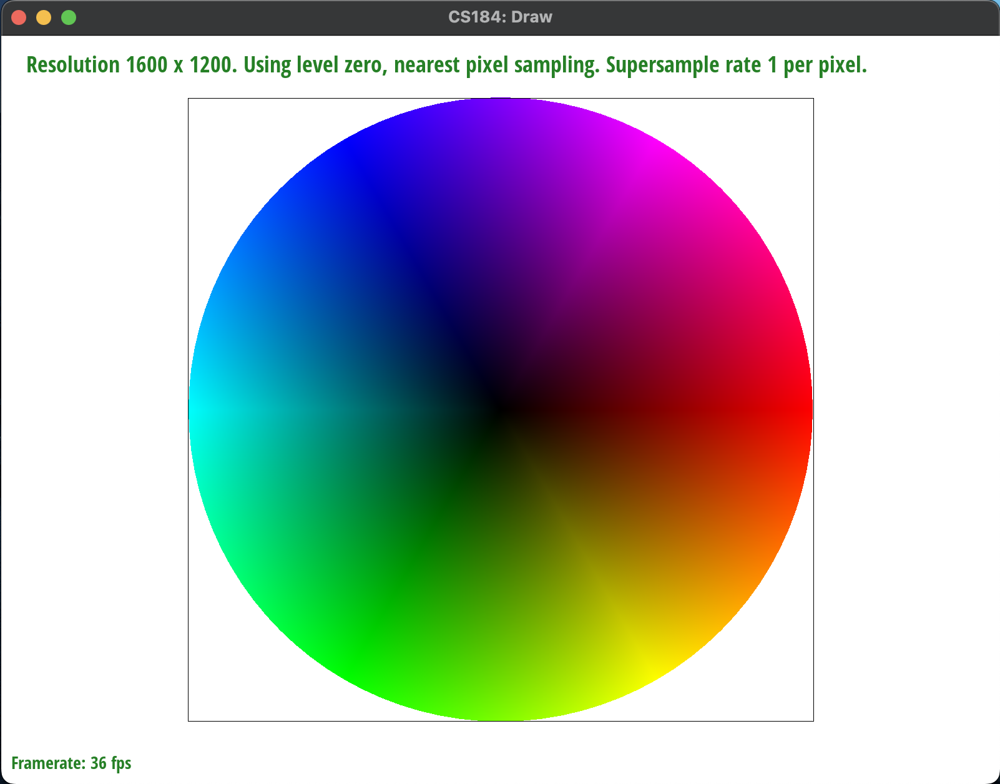
|
Part 5: "Pixel Sampling" for Texture Mapping
-
Pixel sampling is a process to help determine which pixel within the texture image to sample from and use
based on the barycentric coordinates for the sample point in the original image; it is a translation from the
pixel (x, y) coordinates into the texels (u, v) coordinates. I implemented this algorithm by first calculating
the barycentric coordinates of the sample points before multiplying them by the width and the height of the
texture image so that they are in the range of the texture image. For the nearest neighbor pixel sampling
method, I used
roundto find the closest integer texel (u, v) coordinates. For the bilinear pixel sampling method, I instead usedfloorandceilto find the four closest integer texel (u, v) coordinates and then used linear interpolation to weight the "true" texel based on these points. -
Here, I have decided to use the
svg/texmap/test1.svgfile to highlight the differences between the two pixel sampling methods. - There is a large difference between nearest neighbor and bilinear pixel sampling at a sample rate of 1. These examples highlight a large difference between the two pixel sampling methods because the bilinear pixel sampling method essentially is averaging the colors of four pixels and in some ways behaves like a sampling rate of 4 so it allows for a much more realistic and smooth representation. There is a smoother transition between the land and the lakes in the image, rather than sudden changes in the pixel colors. When it is sampling at a rate of 16, there is already a lot of detail when using the nearest pixel sampling so the difference between the two sampling methods is marginal at best and does not give much improvement.
|
|
|

|
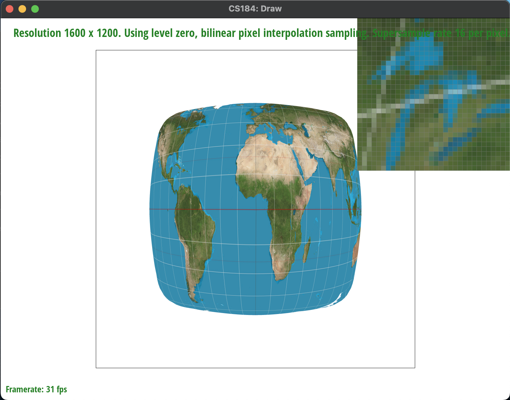
|
Part 6: "Level Sampling" with Mipmaps for Texture Mapping
-
Level sampling is a process which uses mipmaps of differing levels of detail where each subsequent layer is
sampled at
usually a factor of 4 times less than the previous layer. The different levels of detail are based on factors
such as the distance away from the camera or the size of the object being textured. If the distance is closer to
the camera, usually there will be a small jump in texture space so intuitively it is better to use a high
resolution image while if there is a large jump in texture space it is further away from the image so it is
better to use a low resolution image. I updated my
ifconditional to figure out the the barycentric coordinates of(sample_x + 1, sample_y)and(sample_x, sample_y + 1)to calculate $(\frac{du}{dx}, \frac{dv}{dx}) \text{ and } (\frac{du}{dy}, \frac{dv}{dy})$. To get the mipmap level, I passed in theSampleParamsstruct which contained theuvbarycentric coordinates and scaled the difference vectors before finding the longest norm of these vectors. Finally, I usedlog_2to calculate the mipmap level needed. When it wasL_ZERO, I used a mipmap of zero. When it wasL_NEAREST, I rounded the float mipmap level to the closest integer mipmap level. When it wasL_LINEAR, I found the floor and the ceiling of the float mipmap level and used linear interpolation to find the color. - Mipmapping essentially creates caches of varying levels of resolution and acts like a pre-processed lookup table to quickly apply different textures onto the image. There are different tradeoffs in terms of performance, memory, and antialiasing power between the three methods. It is usually faster in performance but will incur higher memory overload to store each of the mipmap levels when compared to pixel sampling.
-
Here are the eight combinations of level and pixel sampling on the
img/chameleon.png. I centered the pixel inspector on the eye of the chameleon to show the differences between all of the combinations.
|
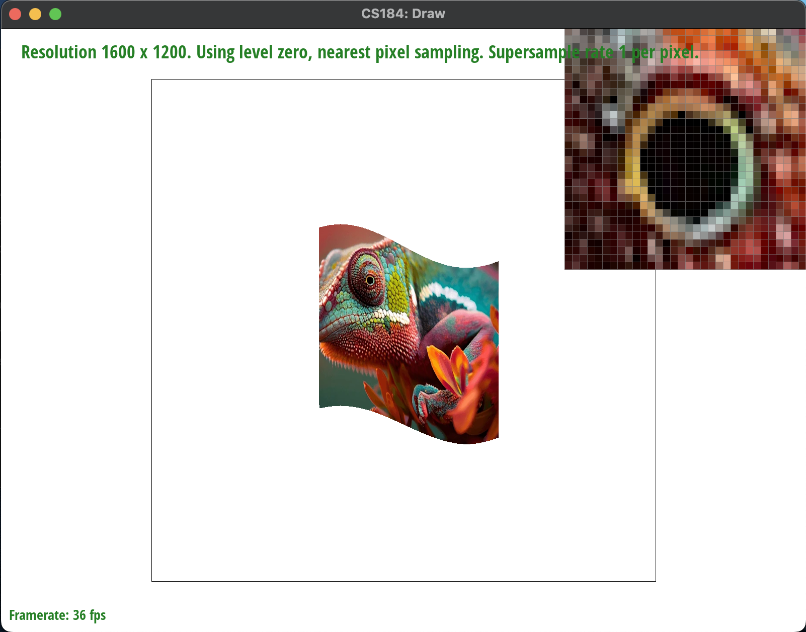
|
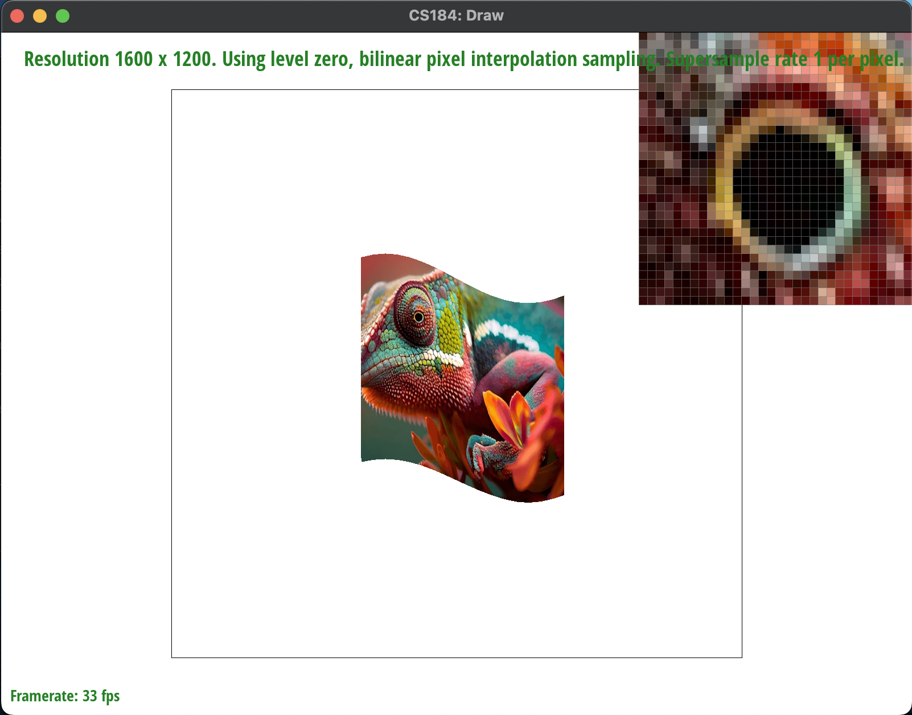
|
|
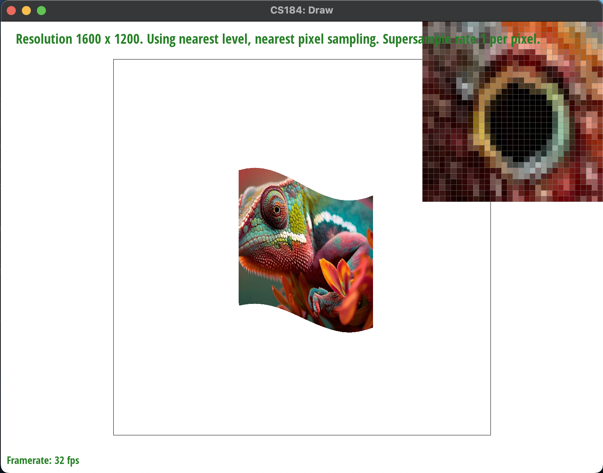
|
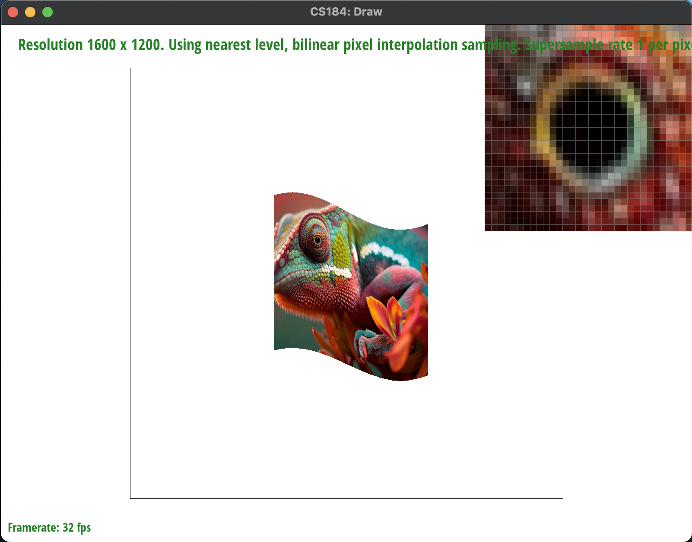
|
|
|
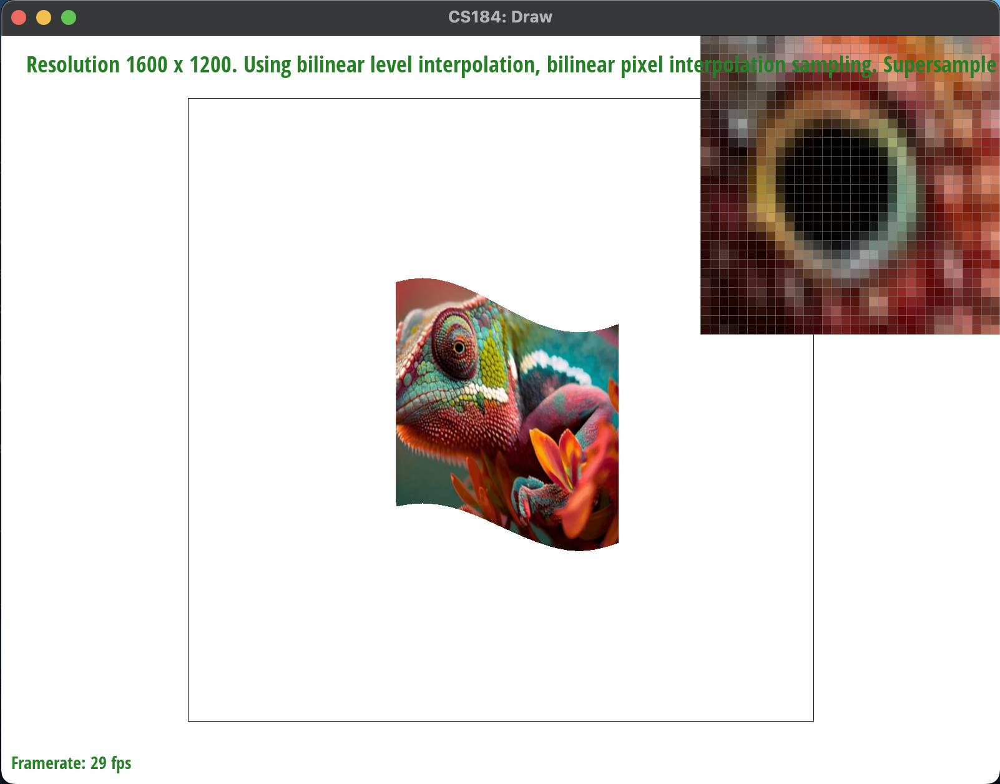
|
Section III: Art Competition
If you are not participating in the optional art competition, don't worry about this section!